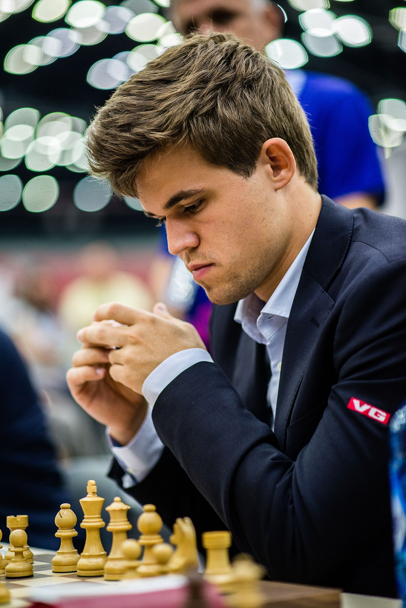

Magnus Carlsen

Norveška 
Ime i prezime:Sven Magnus Øen Carlsen
Rođenje: 30. studeni 1990.
Sex: M
Titula: velemajstor
Najviši rejting:2882
Općenito
Sven Magnus Øen Carlsen je norveški šahovski velemajstor i trenutni svetski prvak. Najveći ELO rejting mu je 2882 što je
ujedno i najviši rejting u povijesti šaha. Titulu velemajstora je dobio s 13 godina, 2007. godine je postao super velemajstor (2700 rejting),
a 2010. godine je postao svjetski broj jedan po rejtingu što ga čini najmlađom osobom ikada da postane broj jedan. Prvi puta postaje svjetski prvak
2013. godine kada se u finalu bori protiv Indijca Viswanathan Ananda, te ga pobjeđuje u klasičnom formatu. Od 2013. do danas i dalje drži tu titulu, a
uz to 2014. i 2019. godine postaje svjetski prvak u sva tri formata šaha i time postaje prva osoba s tim uspjehom.
Stil igre
Magnus je u svojim tinejdžerskim godinama bio poznat kao napadački igrač koji žrtvuje materijal za aktivnost figura, ali kasnije
usvaršava i ostale dijelove igre. Od 2010-te godine pa do danas je poznat kao najopasniji igrač završnica ikada u povijesti i često mu je
plan samo doći do završnice i pobjediti. Najveća su mu slabost otvaranja i poznavanje teorije o otvaranju, zbog toga često koristi čudnija otvaranja
koja su suboptimalna, ali mu osiguravaju prihvatljivu poziciju iz koje pronalazi male greške protivnika i dobija malu prednost tijekom cijele partije.
Sam govori da čak iako je najbolji igrač u završnicama da mu je sredina partije najdraži dio zato što ne zahtijeva nikakvu teoriju, a i dalje je fascinanta
i omogućava brojne napade, za razliku od završnice koja ne osigurava napade, ali nema teorije.
Djetinjstvo
Rođen u Tønsbergu u Norveškoj, Magnus je uvijek puno putovao, također je živio u Finskoj i Belgiji. Kao dijete je pokazivao znakove inteligencije, u svojoj
drugoj godini je slagao slagalice od 50 dijelova, a od četvrte je slagao lego setove namijenjene za djecu od deset do četrnaest godina. Magnus je počeo učiti
igrati šah s pet godina tako što mu je otac pokazao kako igrati pošto je i sam volio igru, nažalost Magnus nije pokazao znakove zainteresiranosti dok njegova
sestra nije počela igrati šah te je onda dobio motivaciju da i sam igra i vježba kako bi je pobjedio. U početcima je vježbao tako da igra sam protiv sebe, a
uz svoje izvanredno pamćenje je brzo napredovao i postao jako dobar. Poznato je da je Magnus s pet godina znao površine, populaciju, zastave i glavne gradove svih
zemalja na svijetu. U 2000. godini je njegova snaga igre došla od 904 do 1907. U 2003. godini je prestao ići u školu na godinu dana kako bi putovao po svijetu natjecajući
se u internacionalnim turnirima kako bi dobio titulu velemajstora.